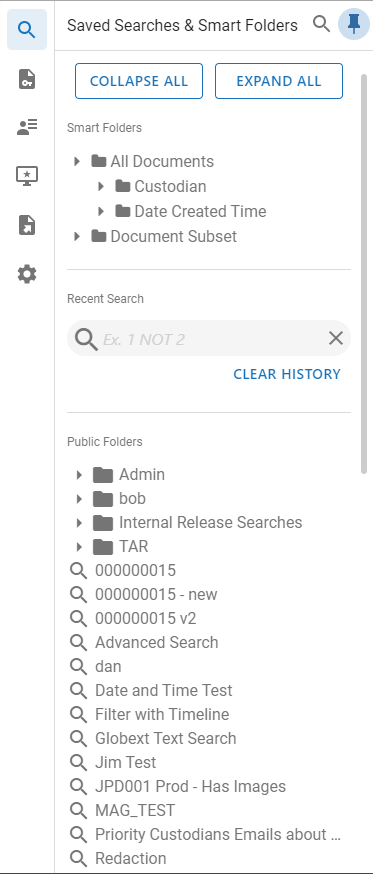
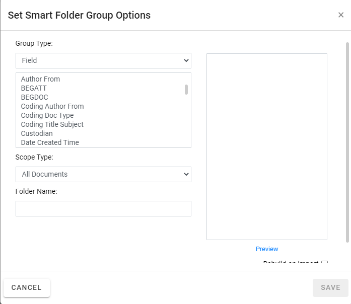
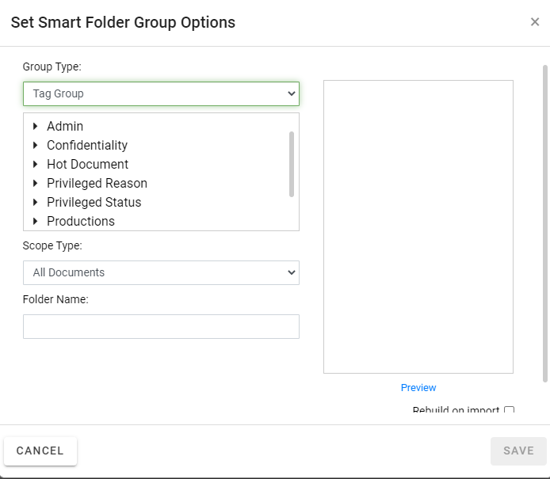
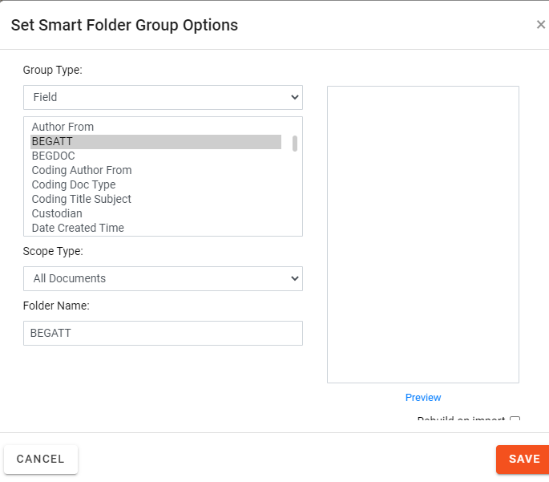

Smart Folders provide a way to find case records/documents based on a case field or document tag group (public tags, not private). Smart Folders are public by default; they can be private if you limit the folder scope to a private search. Smart Folders are “dynamic” in that they will periodically refresh based on changes that are made (such as tagging more documents) that match the defined criteria. You can also close a Smart Folder, then reopen it to refresh the contents.
Smart Folders can be based on a number of system fields and tag groups. Check with your administrator if you have any questions about the fields in your case.
Smart Folders are located in the Saved Searches & Smart Folders panel on the Visual Search Dashboard and Advanced Search screens in
To begin working with Smart Folders:
In

Click the Enter Case button.

The Visual Search Dashboard displays as default.

Hover over the search icon on the top left of the screen to open the Saved Searches & Smart Folders panel.
Click the pushpin to keep the panel open.

When creating new Smart Folders, some steps you can take during the planning phase are:
Identify the required folder content (field or tag group).
Identify and/or create the applicable saved search if you want to limit the scope of the folder to a specific set of documents.
Give some consideration to the folder name so that folder content and purpose are clear. If several folders are to be defined, consider naming conventions for consistency and ease-of-use.
Ensure that the field or tag group is available in the case or batch (for example, is included in the selected coding form).
If you have the permission to do so, create a Smart Folder as follows:
Complete
the steps in
Hover your cursor over the Smart Folders heading and Click
to open the Set Smart Folder Group Options dialog box.

-or-

|
item |
description |
||
|
Group Type |
Choose the folder content, Field or Tag Group. |
||
|
Folder Content |
Depending on the Group Type chosen, select an individual field or tag group name. |
||
|
Scope Type |
Choose either All Documents (entire case) or Saved Search. If you choose Saved
Search, the list of available searches are displayed;
select the required search. Click
|
||
|
Folder Name |
Enter a name for the folder. By default, the folder name is either the selected field or tag group name. |
||
|
Preview |
Click this link to display the folder content based on your group, content and scope selections. |
||
|
Rebuild on import |
Select this check box to automatically rebuild the folder if new data is added to your case. |
When the folder definition is complete, click  . The folder is added
to the Saved Search pane on the Case View page.
. The folder is added
to the Saved Search pane on the Case View page.
After you or other reviewers have created Smart Folders, view documents in a folder as follows:
After entering a case in the Review module, hover your cursor over the magnifying glass in the left panel to view the Saved Searches pane. A list of Smart Folders display in that pane.
Click to expand the required type of folder (All Documents or Document Subset).
Click to expand the folder of interest, then review the list of entries in the folder (either all entries in a particular field or all tags in a particular tag group).
Click an entry of interest to display all records/documents with that content (a field value or a tag) in the results grid.
View records in the folder. Use the scroll/navigation
bars to see all records in the set; sort/adjust tab contents as described
in
Optional: search for specific records in a
Smart Folder by using the Advanced Search as described in
If you have permission to edit Smart Folders, you can change them as follows:
Complete
the steps describes in
Right-click the Smart Folder to be changed and select Edit. The Set Smart Folder Group Options dialog box appears.

Change the folder name and/or criteria, then
click .
Communicate changes to reviewers so they will use the folder correctly.
Smart Folders can be rebuilt (singly or all at once) to ensure newly imported data, reviewer field edits and/or tagging within the Smart Folder(s) are accounted for.
|
|
Note: Smart Folders defined to include the Rebuild on import option are automatically rebuilt if data is added to the case (if the corresponding field or tag group is found in the load file). Smart Folders can also be rebuilt for other reasons, such as when a Smart Folder is edited and its criteria changes. |
To rebuild Smart Folders:
To rebuild an individual Smart Folder:
In the Saved Searches pane, right-click the folder and select Rebuild All.
Wait as the folder retrieves the latest data. While the action is in process, the folder name includes a suffix of (Building).
When you finish working with Smart Folders, click the All Documents folder in the Saved Searches pane or perform another action, such as running a search.
If you have the permission to do so, you can delete a Smart Folder.
To delete a Smart Folder:
In the Saved Searches pane, right-click the folder and select Delete.
A warning message appears.
Click
 .
.
Related Topics